做小程序，先别急着写代码
对应短视频主题：个人开发者做小程序，为什么第一步不是写代码？
更新于：2026-09-12
个人开发者最容易把“小程序项目”理解成技术题：先选框架、搭后端、画页面，再想怎么收费。但用户不会因为技术栈完整而付费；他们为一个能解决具体问题、能拿到结果的产品付费。
这篇文章提供一个更实用的起点：先验证一条最短的交易闭环，再决定要写多少代码。这里的“交易”也可以是预约、订阅、购买数字内容或一次明确的服务申请，不局限于立即付款。
先画出产品，而不是先搭架构
{kind=link}
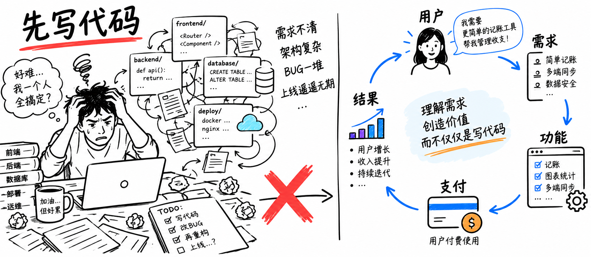
产品先于代码：先定义用户、任务和可交付结果。
开始前，先用一句话回答三个问题：谁会在什么情境下使用它，他要完成什么任务，以及完成后获得什么结果。如果这三件事说不清，新增功能通常只会让项目更大，而不会让产品更清楚。
例如，“做一个知识库小程序”还是功能描述；“让独立创作者把结构化教程交付给付费学习者，并支持试读和订阅”才是可被验证的产品假设。
把想法压缩成一条最小闭环
{kind=link}
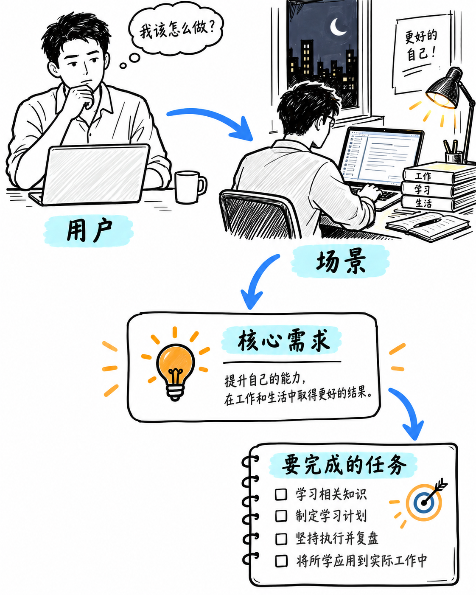
先建立用户与需求的对应关系，再决定功能。
用户需求明确后，才值得把它翻译为产品动作和页面功能。
{kind=link}
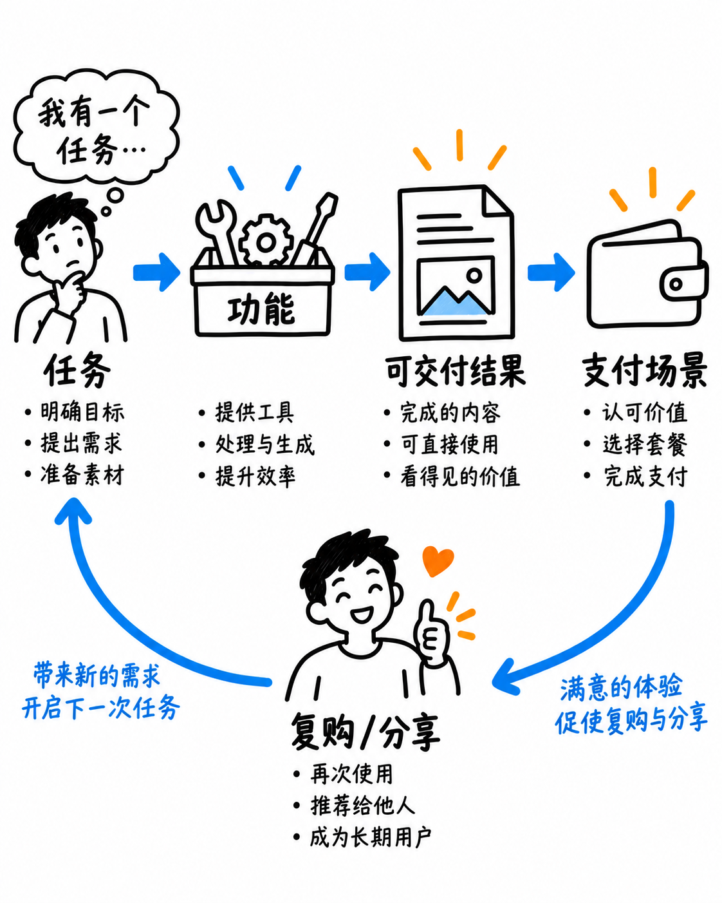
功能必须服务于一条可验证的支付、预约或反馈闭环。
可以把 MVP（最小可用版本）理解为：只保留一条足以验证价值的路径。它应让用户完成一次真实任务，并让你看到一次真实信号，例如完成付费、发起预约、提交资料、领取试读或留下有效反馈。
一个可检查的闭环是：
用户进入页面，能理解自己能得到什么；
用最少步骤提交输入或选择内容；
系统交付可感知的结果；
用户完成支付、预约或明确下一步；
你能记录结果、处理失败状态，并据此改进。
不要把“登录、消息、会员、分享、复杂推荐、后台配置”默认视作第一版必需功能。它们只有在直接支撑上述路径时才值得优先实现。
两类产品，两个验证重点
案例一：结构化内容服务
{kind=link}
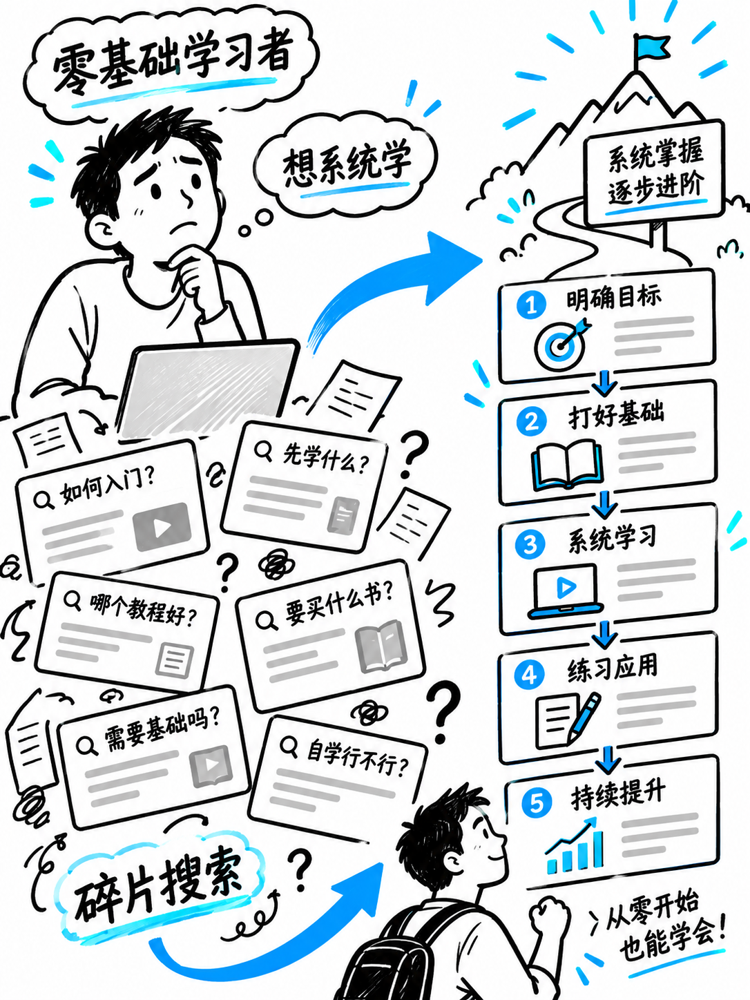
内容型产品先确认谁需要持续获得可信、结构化的资料。
内容型服务首先要验证的是目标用户是否需要持续、而非一次性地获得这些资料。
{kind=link}
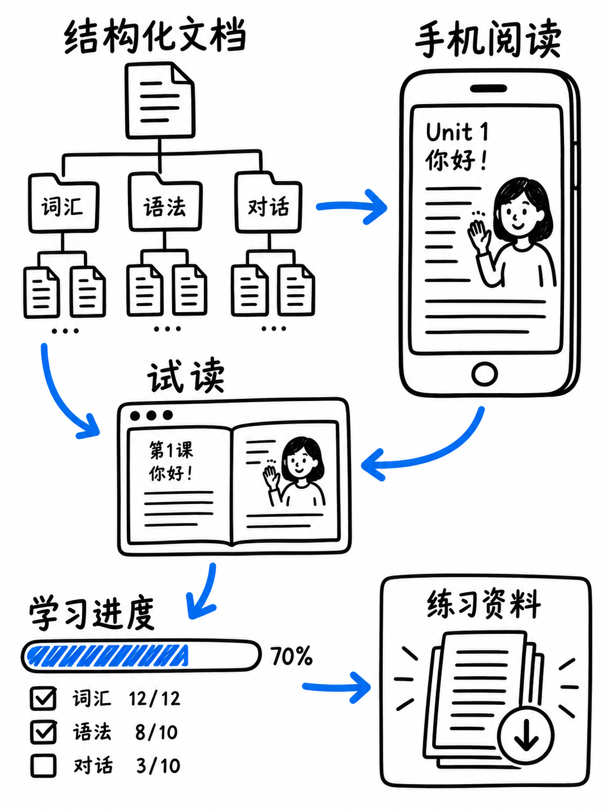
核心不是资料数量，而是读者能否快速找到、理解并使用内容。
确认交付形态后，再把试读、权限和购买后的访问状态连成一条连续路径。
{kind=link}
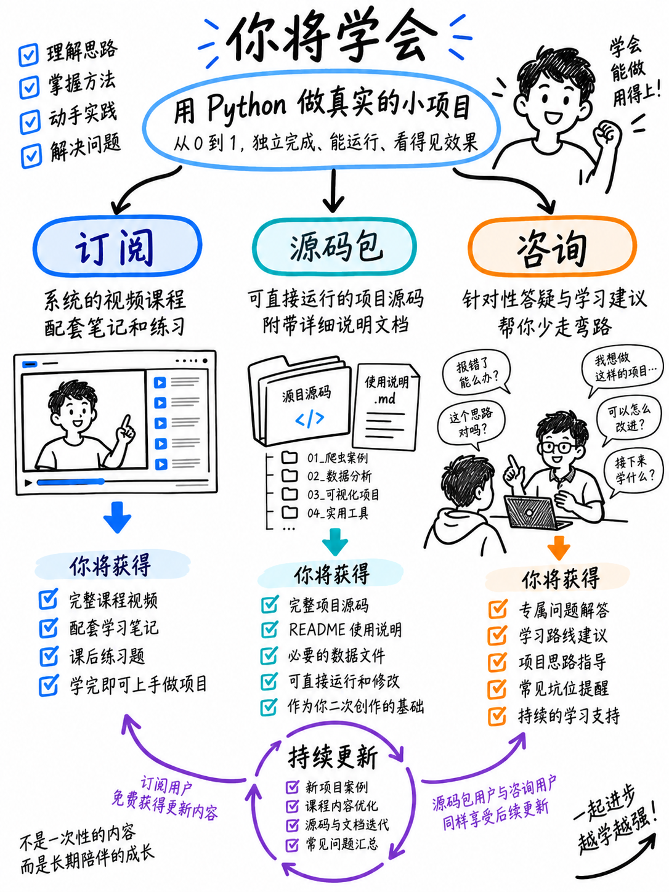
内容服务要把试读、交付和购买后的访问状态设计成一条连续路径。
以文档或教程为核心的产品，重点不是“文章越多越好”，而是交付是否明确：读者是否能预览价值、是否能在购买后获得对应权限、内容是否有更新机制。可尝试的商业动作包括订阅、单次购买、源码包或咨询，但价格和转化率都必须由真实用户验证，不能从案例中直接套用。
案例二：高频、可分享的工具
{kind=link}
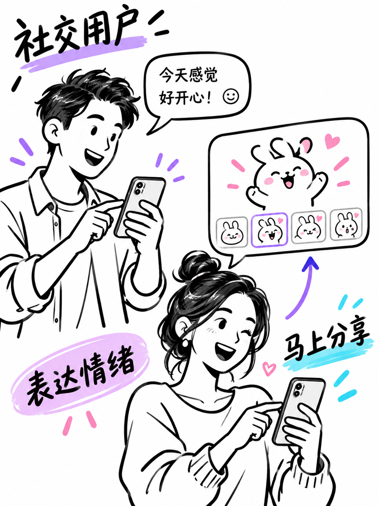
工具型产品要找到用户频繁发生、且愿意立即解决的任务。
如果用户愿意开始一次任务，下一步要尽量缩短从输入到获得结果的等待和操作成本。
{kind=link}
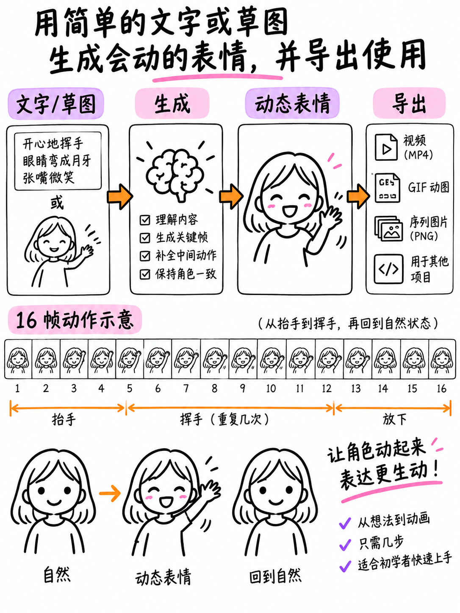
把输入、生成和分享压缩为短路径，才有机会得到真实使用反馈。
只有结果被真实使用后，才适合测试配额、会员或其他分层服务是否有价值。
{kind=link}
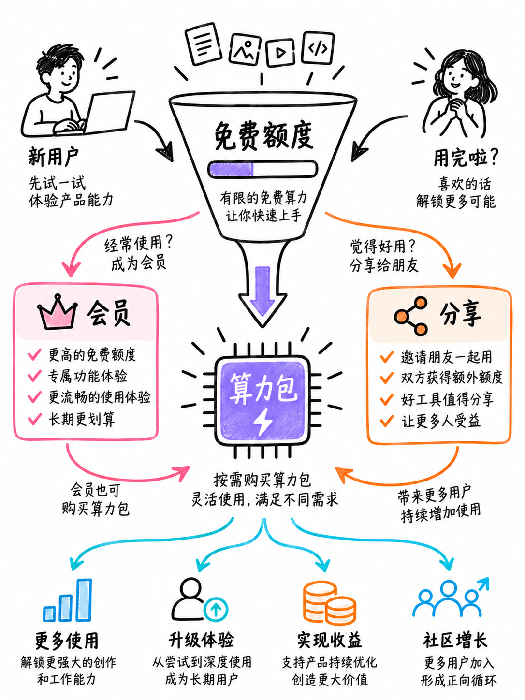
先让用户体验结果，再验证算力包、会员或合规广告等模式是否成立。
生成类或轻工具类产品的价值往往发生在“立刻看到结果”的一刻。此时首先要测的是：用户是否愿意完成一次生成、保存或分享；付费设计则应紧贴成本与结果，例如更高配额、更多素材或更快交付。不要在没有使用信号前，预设一套复杂会员体系。
用 MVP 防止功能堆积
{kind=link}
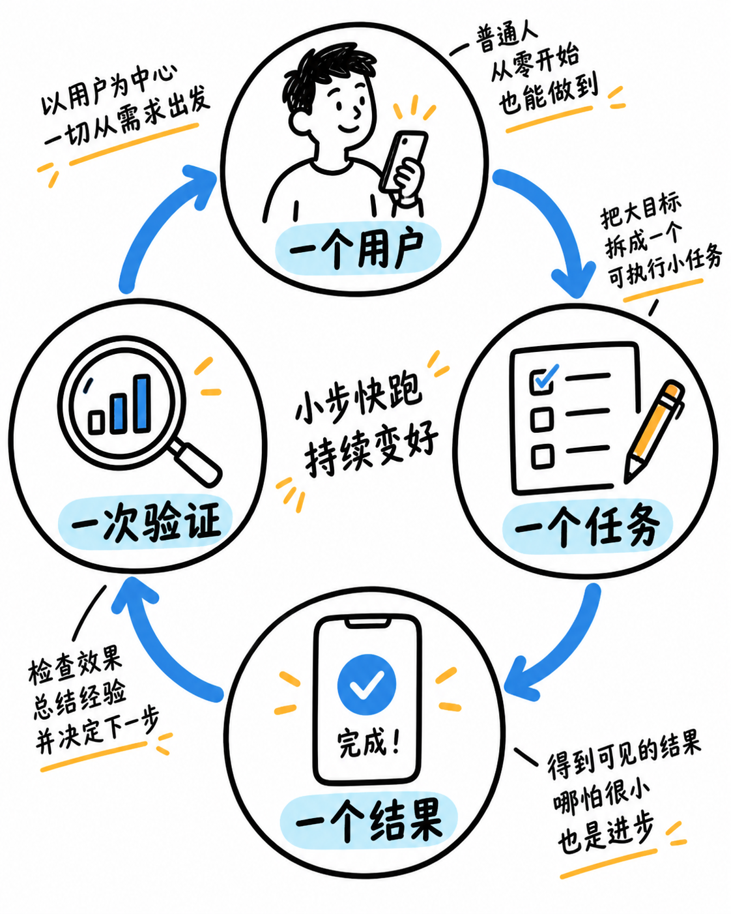
MVP 不是半成品，而是一条完整但足够短的验证路径。
闭环跑通后再考虑扩展；否则，新增功能会掩盖原本尚未被验证的用户需求。
{kind=link}
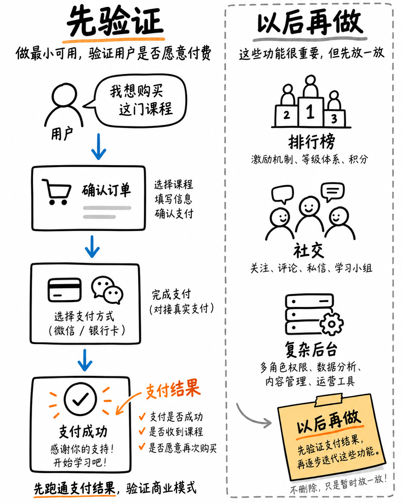
每增加一个功能前，先问它是否能改善当前闭环。
推荐按两周到四周的短周期推进：先写出一个用户任务，列出完成它不可缺少的页面、数据和状态，然后找少量目标用户实际使用。若用户无法完成任务，先修路径；若能完成却不愿意继续，回到需求和交付价值；若愿意继续，再扩展功能。
个人开发者的四项同时责任
{kind=link}
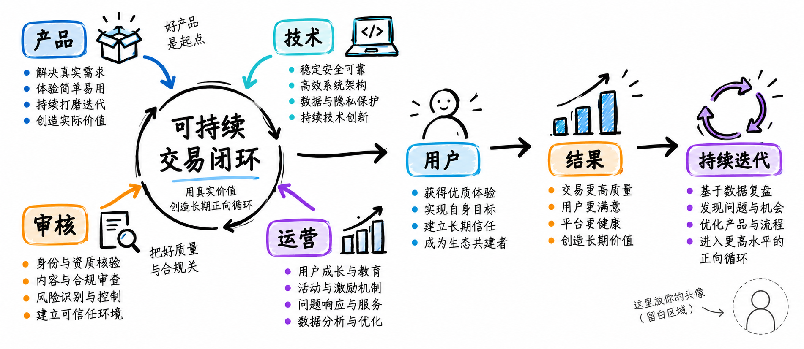
产品、技术、合规运营和推广是同一条闭环的四个部分。
写代码只是其中一部分。上线前至少检查：
产品：用户任务、交付结果和失败提示是否明确；
技术：数据、支付或预约状态能否重复校验，异常是否可恢复；
合规与运营：隐私说明、内容边界、资质和平台审核要求是否已按当前规则核对；
推广：用户从哪里来，看到什么承诺，完成任务后是否愿意分享或再次使用。
结论：先验证价值，再扩大工程
真正值得先写的不是“项目骨架”，而是能让一位具体用户完成一次具体任务的最短路径。把产品假设写清楚、把交付和反馈接起来、用少量真实用户验证，再逐步投入技术复杂度，个人开发者的时间才会花在最有价值的地方。
参考与更新说明
本文不提供收益、转化率、费率或审核通过率承诺。支付、隐私和平台规则具有时效性，实施前应以当前官方规则为准。